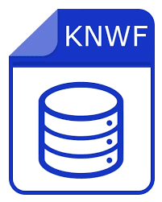

KNIME to Python
User Flow
AI-Augmented Migration Factory
1

KNIME Workflow Ingestion & Parsing
High-performance XML processing pipelines ingest and parse thousands of .knwf files, extracting nodes and connections into structured datasets
Code Repositories
XML Processing
Python
2
LLM-Based Node-to-SQL Generation
AI Logic Functions translate each KNIME node's XML configuration into standardized SQL SELECT statements for semantic analysis
AIP Logic Functions
LLM Translation
SQL Generation
3
Vectorization & Semantic Clustering
Code-aware transformers vectorize SQL logic, enabling scalable clustering of functionally similar nodes across entire workflow repositories
Vector Embeddings
Semantic Clustering
Pattern Recognition
4
Canonical Function Creation & Validation
Human-guided Workshop applications with AI assistance generate, test, and validate production-ready Python functions for the canonical library
Workshop Apps
Human-in-Loop
Quality Gates